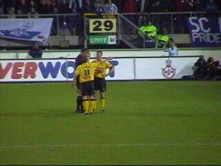
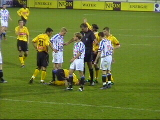

|
SC Heerenveen - Roda JC (3-2) |
Kan niet missen: we zijn gearriveerd in H'veen.
Een mooi café, maar er was weinig los.
In café "Het kan net" was het druk en gezellig.
Meer Limbo's dan Friezen op straat.
De Hanenbretboys op weg naar het stadion.
Het Piet Paaltjes stadion wordt binnenkort met
een tweede ring uitgebreid.
Blauw van de drank...
Het Fryske volkslied werd overstemd door
"Waar in 't bronsgroen eikenhout.....
.....BAMmetje zingt!"
Daar marcheert een oude bekende.
Vicelich scoort 0-1 in de 28e min.
Vreugde onder de 200 Rodasupporters.
0-2 door Soetaers in de 38e min.
De stilte in het stadion sloeg in de tweede helft
om in een heksenketel. Al in de 47e min. scoort
Jensen 1-2.
Cristiano mist vrij voor Vonk.
Heerenveen ramde er lustig op los. Het spel
verruwde en Roda kwam zwaar onder druk.
Denneboom scoort 2-2 in de 57e minuut.
Halve omhaal van Anastasiou die over gaat.
Aan de andere kant wordt wel gescoord. Jensen
maakt er in de 63e min. 3-2 van. De bal ging via
de onderkant van de lat op de lijn. Een onterecht
toegekend doelpunt!

Protesten helpen niet. Roorda kreeg zelfs een
gele kaart van Temmink.

Een van de vele gemene overtredingen van
Heerenveen.
Denneboom plant zijn knie in Roorda's boven-
been welke hierdoor zodanig geblesseerd raakt...
...dat hij vervangen moet worden door Kujovic.
Soetaers wordt neergehaald in de zestien. Geen
strafschop volgens Temmink.
De wederom nutteloze protesten.
Het stormoffensief van Heerenveen in de tweede
helft en de foute beslissingen van Temmink
hebben het moreel van Roda vakkundig gesloopt!
Een gelijkspel was op zijn plaats geweest. Deze
nederlaag is zuur....
Foto's van onze Friese collega's op Feanfans
©
Koempels
Pleasure Dome